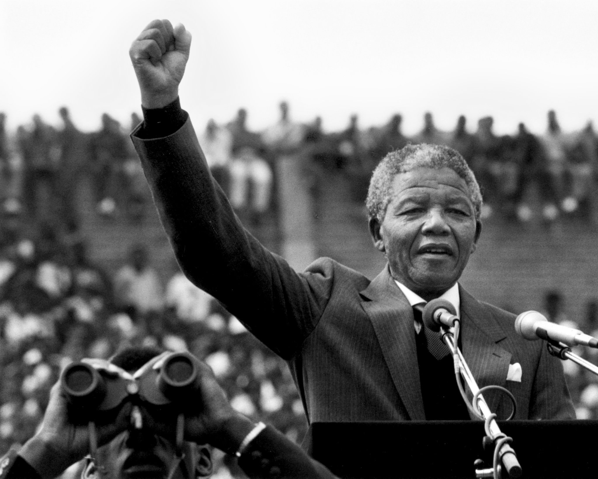

Nelson Mandela

Nelson Mandela two days after his release after 27 years as a political prisoner.
This is a timeline of Nelson Mandelas life:
- 1918 - Born Rolihlahla Mandela at Mvezo in the Transkei
- 1939 - Enrols at the University College of Fort Hare, in Alice
- 1944 - Co-founds the ANC Youth League (ANCYL); marries Evelyn Ntoko Mase – they have four children: Thembekile (1945); Makaziwe (1947 – who dies after nine months); Makgatho (1950); Makaziwe (1954)
- 1956 - Arrested and later joins 155 others on trial for teason. All are acquitted by 29 March 1961
- 1985 - Admitted to the Volks Hospital for prostate surgery
- 2001 - ADiagnosed with prostate cancer
- 2013 - Passes away at home in Johannesburg